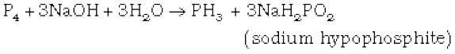
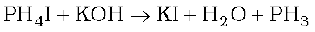
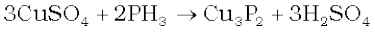

7.7 Phosphine
Preparation
Phosphine is prepared by the reaction of calcium phosphide with water or dilute HCl.
Ca3P2 + 6H2O → 3Ca(OH)2 + 2PH3
Ca3P2 + 6HCl → 3CaCl2 + 2PH3
In the laboratory, it is prepared by heating white phosphorus with concentrated NaOH solution in an inert atmosphere of CO2.

When pure, it is non inflammable but becomes inflammable owing to the presence of P2H4 or P4 vapours. To purify it from the impurities, it is absorbed in HI to form phosphonium iodide (PH4I) which on treating with KOH gives off phosphine.

Properties
It is a colourless gas with rotten fish smell and is highly poisonous. It explodes in contact with traces of oxidising agents like HNO3, Cl2 and Br2 vapours.
It is slightly soluble in water. The solution of PH3 in water decomposes in presence of light giving red phosphorus and H2. When absorbed in copper sulphate or mercuric chloride solution, the corresponding phosphides are obtained.

Phosphine is weakly basic and like ammonia, gives phosphonium compounds with acids e.g.,
Uses: The spontaneous combustion of phosphine is technically used in Holme's signals. Containers containing calcium carbide and calcium phosphide are pierced and thrown in the sea when the gases evolved burn and serve as a signal. It is also used in smoke screens.
Example 7.6
In what way can it be proved that PH3 is basic in nature?
Solution
PH3 reacts with acids like HI to form PH4I which shows that it is basic in nature.
PH3 + HI → PH 4I
Due to lone pair on phosphorus atom, PH3 is acting as a Lewis base in the above reaction